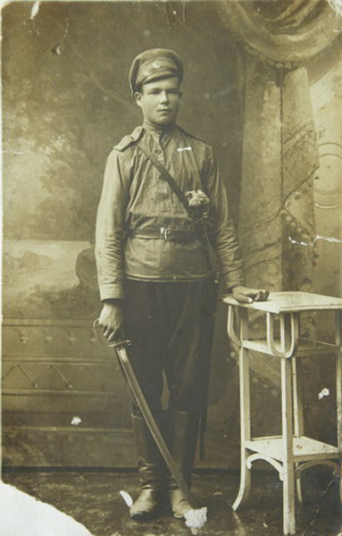
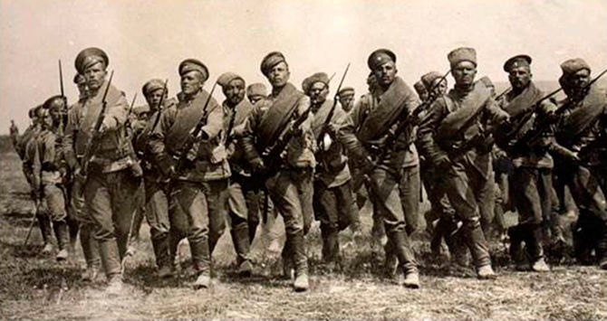

Первая мировая войнаНа этом фото, может быть, мой дед Феокти́ст (др.-греч. Θεόκτιστος — «созданный Богом», от Θεός — бог и κτίζω — основываю, делаю, порождаю) — мужское имя древнегреческого происхождения. Я взял это фото в интернете и поместил на эту страницу только потому, что в детстве я видел почти такой портрет деда над кроватью моей бабушки Натальи Илларионовны. Мне уже за 60 и я давно не живу в местах своего появления на свет, а родственники не сохранили этот портрет. Но сейчас это и не важно. Он, как этот безымянный солдат Армии Российской империи, участник Первой мировой войны (28 июля 1914 — 11 ноября 1918). Мой отец Иван Феоктистович родился в октябре 1919 года. Я родился после возвращения моего отца со Второй мировой войны. Однако внутри российские и мировые проблемы пока остаются нерешёнными.
На фото 1916 года, вероятно, Иван Шурыгин, земляк моего деда из деревниУляхино. Они были вместе призваны в 1914-1915 годах на Первую Мировую войну, вместе демобилизовались в 1918 году.
В год рождения моего отца, в 1919 году, дед был призван в Красную Армию и по рассказам отца умер от тифа или испанки на призывном пункте во Владимире, гдеи захоронен в общей могиле для тифозных больных.
 .................................................................................. Возможно, Бог и создал человека, дав ему неплохие, но трудно исполнимые заповеди. ......................................... В нашей истории очень много вопросов.
 |